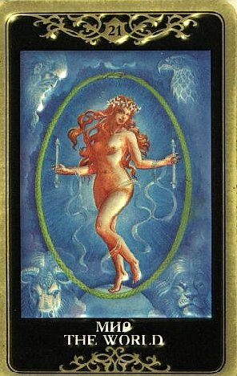

В высшем смысле – это состояние Души, отлетевшей с земли, взлетевшей ввысь, уже прошедшей горнило Страшного Суда, и на этом (!) Суде получившей полное отпущение.

Завершение бесконечного ряда воплощений, освобождение от кармических зависимостей, очищение, возрождение. На высшем уровне Аркан описывает колоссальный, словами невыразимый Покой.
Наверное, это тот самый покой, который получил в награду Мастер.
Это тот покой, за который молятся по отшествии души («заупокойная служба»), приходящий тогда, когда закрываются оплаченные кармические счета.
Стадия в духовном развитии, символизирующая полное понимание собственной внутренней природы и окружающих сил, овладение ими.
Это глобальная интеграция, достижение максимально совершенного состояния из возможных на данный момент. Состояние души, удостоенной Божественного Видения вещей. Постижение, освобождение от иллюзий (причем оно не сокрушает, а действительно освобождает).
В символическом (а иногда и достаточно буквальном) смысле - вновь обретаемый рай, возвращение домой.
Это конец приключений и награда. Как в русской пословице: "конец - делу венец".
А венец - не только корона у Короля, но и венок, изображенный на Аркане Мир.
Вообще Аркан отличается богатейшей по смыслу символикой, и ее смысл – это постоянное и вечное обновление жизни, круговорот, содержащий в себе конец всего и возвращающий жизнь к ее вечному истоку.
В силу этого единства начала и конца роль этого безусловно очень позитивного Аркана в раскладе может быть неожиданной – высшее космическое благо иногда не вполне совпадает с нашими земными представлениями о благоприятных обстоятельствах.
Но все же Мир - это символ успеха, исполнения желаний, достижения цели, серии хороших событий, которые принесут свои плоды.
В практическом смысле эта карта считается благоприятной во всех отношениях (особенно если она окружена дополнительно хорошими картами).
Толковать ее бывает сложно лишь в силу того, что в ее значении смыкаются начало и конец: она может показывать как инициирование, начало, рождение чего-то абсолютно нового (хотя за этим рождением стоит долгий пройденный путь, иногда вполне очевидный, а иногда незримый), так и завершение пути.
Большинство авторов сходятся в том, что Мир предвещает хороший исход событий, а другие карты лишь показывают, насколько легко или сложно его будет достичь.
При раскладе на ситуацию Мир предвещает несомненный успех задуманного (причем вне зависимости от сферы деятельности), исполнение всех желаний, счастливое завершение хода событий.
Человек получит все, о чем мечтал.
Достижение цели (причем может быть даже более высокой, чем та, которая предполагалась), завершение пути, апофеоз, полный успех.
Освобождение, истина, покой. Достижение жизнью совершенной формы.
Утверждение в правильности своих действий. Карта говорит о том, что человек может доверять своим суждениям в текущих обстоятельствах, тут он знаток и едва ли кто-то справится с этим лучше него.
По Миру переживается очень интересный опыт, словно найдено правильное место для центра круга. Это самая важная точка – от ее местоположения зависит местопложение ВСЕГО круга. И вот, что-то такое найдено, и все остальное мистическим образом становится на свои места.
Проблемы решаются, здоровье восстанавливается, люди сами притягиваются, а какие надо - сами отпадают.
Деньги, информация – буквально все становится на свои места, и кажется, что усилия при этом прикладываются минимальные, все происходит само собой.
Это значит, что человек достиг в развитии всего, чего должен был сейчас достичь – той цели, которая позволяет без усилий (!) достигать успеха в более мелких и протых делах.
Конечно, можно пытаться «заякорить» это состояние (чему посвящено, как кажется, едва ли не все НЛП), но путь есть путь, застрять в одной точке невозможно, какой бы прекрасной она ни была.
По Миру у человека есть вот это ощущение, что паззл сложился, задача сошлась с ответом, что-то очень существенное по жизни «зашло в пазы», и он ощущает гармонию сам с собой и с окружающим миром.
По Миру всегда в жизнь что-то должно придти, проявиться, воплотиться, заявить о себе. Это очень сильная карта. Есть смысл питать самые светлые надежды на будущее.
Еще эта карта может означать международные связи. Мир дает широту раскрывающихся возможностей, разнообразие перспектив. Дальние странствия («выход в мир»), путешествие, перемена места.
Карта Мир определяет значение всех остальных карт в раскладе в позитивную сторону, ее влияние очень мощно. Если рядом присутствуют карты негативного ряда, то их значения несколько смягчаются.
ЛИЧНЫЕ ОТНОШЕНИЯ
Happy end.
Примирение, исчезновение враждебности или напряжения.
Объединение и сосуществование противоположностей в полном мире и равновесии.
Завязывание новых вдохновляющих контактов.
Одиноким людям карта предвещает обретение истинно подходящего партнера (причем как правило человек интуитивно знает, что найдет его, и не особо оглядывается на другие возможности).
Единение в паре, одухотворенная близость, соединение возлюбленных.
Браковенчание («под венец», символизируемый венком Мира). Свадебное путешествие. Сексуальная инициация. Зачатие ребенка, либо его рождение. Сексуальное удовлетворение. Вся полнота счастья, всеобъемлющий опыт любви.
Мир может указывать на отношения, развивающиеся неспешно, своим темпом, и форсировать события нет смысла.
Описывая характер отношений, Мир говорит о любви космического уровня, когда оба чувствуют себя свободными и счастливыми.
Иногда карта возвещает такую стадию в духовном развитии, на которой происходит освобождение от привязанностей и зависимостей.
Мир больше, чем любая другая карта внушает надежду на исполнение подлинного сердечного желания человека.
Но как правило это все-таки именно космический опыт в партнерстве, когда присутствует свобода от мелочности и условностей, и при этом оба сознают, что эти отношения необычайно значимы (на них «мир держится»).
Они как правило прочны, красивы и искренни.
В этой паре может не быть детей, или дети давно выросли и пошли своей дорогой. Миры разлетелись, а центр Вселенной остался, и в нем – душевный комфорт, бытовое равновесие, сексуальная гармония, духовная зрелость и взаимное развитие и обогащение.